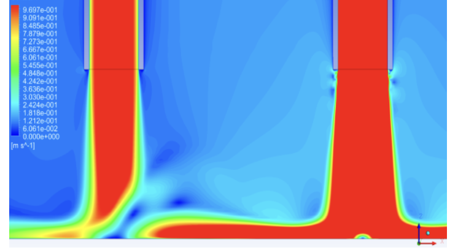

Flow-Physics Applications

We investigate jet impingement, multiphase interaction, and cavitating flows relevant to aerospace,
marine, and energy systems. High-fidelity CFD studies reveal the physics of ground- and water-effect jets,
twin-jet fountain formation, and cryogenic pump cavitation, providing design guidance for STOVL aircraft,
propulsion hardware, and hydraulic machinery.
Representative work includes:
• Jet–surface interaction analyses of round and rectangular jets impinging on ground or water.
• Parametric study of twin-jet fountain dynamics across Reynolds number and jet spacing.
• Coupled CFD-PBM cavitation models for liquid-oxygen turbo-pumps and hydrofoils.
• DES/RANS validation against experimental twin-water-jet data.
Related Publications
-
Agarwal R. K., Gao H. Study of Round-Jet Impingement in Proximity of Ground and Water Surface,
Journal of Aircraft, 2019. Link
-
Gao H., Han X., Liu Q., Agarwal R. K. CFD Simulations of Two Rectangular Water Jets Impinging on a Water Pool,
AIAA AVIATION, 2018. Link
-
Gao H., Liu Q., Qu Q., Agarwal R. K. Numerical Study of Round-Jet Impingement in Proximity of Ground and
a Water Surface, AIAA AVIATION, 2018. Link
-
Liu Q., Gong L., Gao H., Agarwal R. K. Numerical Investigation of Cavitation Characteristics of
a Liquid-Oxygen Turbo Pump, AIAA AVIATION, 2018. Link
-
Liu Q., Xu K., Gao H., Agarwal R. K. Numerical Simulation of Cavitation Flow around a Hydrofoil
Based on a Coupled CFD-PBM Model, AIAA SciTech, 2019. Link
-
Zhang X., Agarwal R. K., Gao H., Zhou L. Numerical Simulation of Fountain Formation Due to Twin-Jet Impingement
on Ground, AIAA AVIATION, 2019. Link
← Back to Homepage